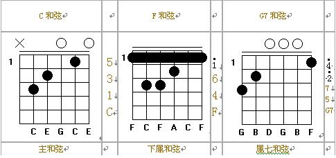

一些关于和弦的东西
和弦是指多个音同时出来的效果，通常来说每个音之间相差两度，常见的有三和弦（三个音）和7和弦（4个音）。所有的和弦都有一个根音x. [x, x+2, x + 4]这三个音构成三和弦，[x, x+2, x+4, x + 6]这三个音构成4和弦。根音是什么音，就称之为什么和弦。比如根音是F的话，并且是3和弦的话就记为F和弦；如果是7和弦的话，就记为F7。
在吉他演奏的时候只要出来的是这些度的音，那么和弦就完成了，即使里面有高八度或者是低八度的音。以吉他的C大小和G7为例

C和弦从上到下出来的音有3(低8), 1, 3, 5, 1(高8）和3（高8），而G7和弦从上到下出来的是5(低8），7（低8） ，2，5，7，4（高8）。因为G根音对应的是5, 所以几个音应该是[5, 7, 2, 4]。